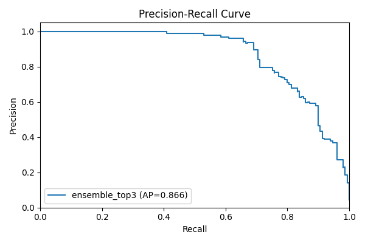
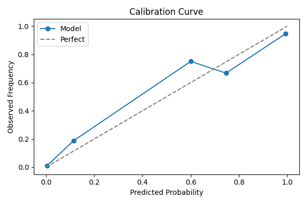
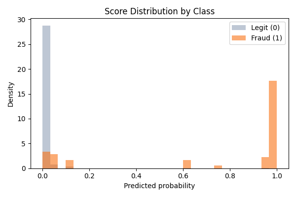
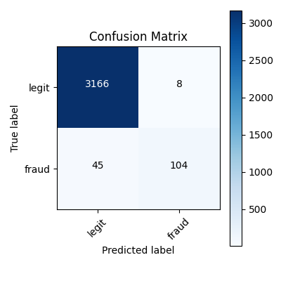
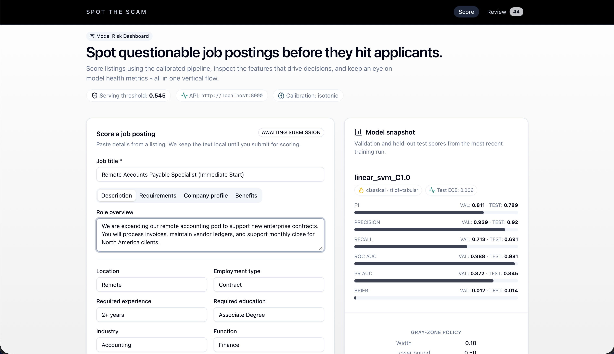
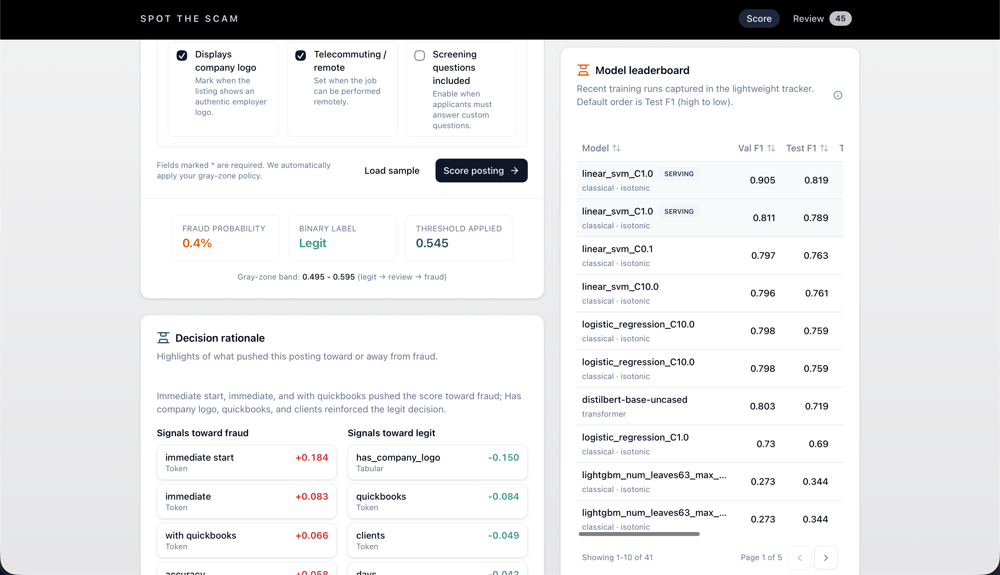
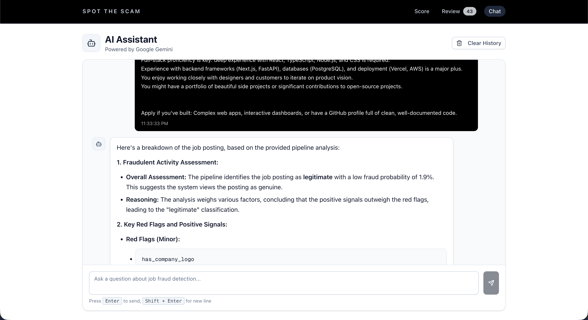
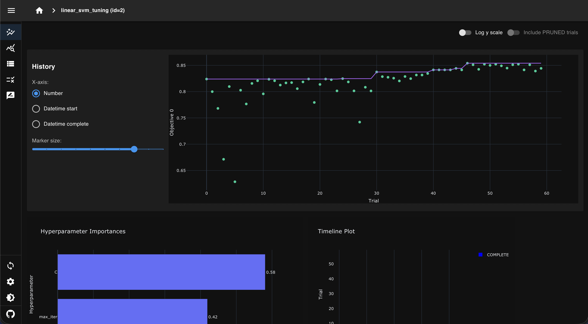
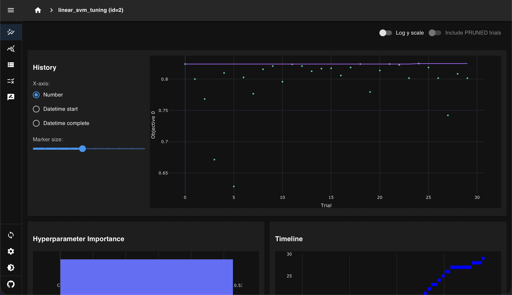
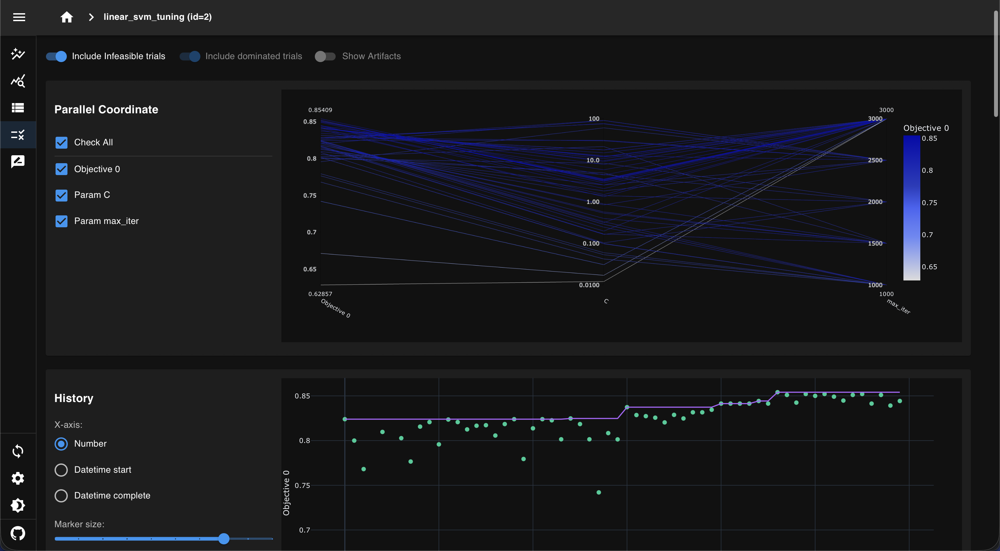

AI-Powered Job Fraud Detection with Ensemble Machine Learning
Protecting job-seekers from fraudulent postings using calibrated ML models achieving 85.4% precision and 77.2% F1 score with explainable predictions.
Spot The Scam is a comprehensive machine learning system designed to protect job-seekers from fraudulent job postings. The system combines classical ML models with deep learning transformers, featuring ensemble architectures, calibrated probability estimates, and explainable AI capabilities.
Leverages ensemble ML pipeline combining Linear SVMs, Logistic Regression, XGBoost, LightGBM, and DistilBERT for robust fraud detection across diverse posting styles.
Achieves 85.4% precision on test data with excellent calibration (ECE: 0.0066), ensuring reliable confidence estimates for critical decision-making.
Token-level importance analysis with SHAP-style contribution rankings provides transparency and trust in model decisions.
Gray-zone policy routes low-confidence predictions to human review, optimizing the balance between automation and accuracy.
Real-time prediction interface with AI-powered chat assistant for fraud analysis, built with Next.js and modern UI components.
FastAPI REST API with Docker containerization, MLflow experiment tracking, and ONNX model export for scalable deployment.
Our ensemble model achieves state-of-the-art performance on job fraud detection, with well-calibrated probability estimates.
Our model demonstrates excellent calibration with an Expected Calibration Error (ECE) of only 0.0066 on the test set, ensuring that predicted probabilities accurately reflect true confidence levels.

Precision-Recall Curve

Calibration Curve

Score Distribution

Confusion Matrix
A comprehensive end-to-end pipeline from data ingestion to production deployment, with modular components for training, evaluation, and inference.
spot-the-scam/
├── 📦 src/spot_scam/ # Core Python package
│ ├── data/ # Data ingestion & preprocessing
│ ├── features/ # Feature engineering (TF-IDF, tabular)
│ ├── models/ # Classical, XGBoost, Transformer models
│ ├── tuning/ # Optuna hyperparameter optimization
│ ├── evaluation/ # Metrics, curves, calibration, reporting
│ ├── inference/ # FraudPredictor, gray-zone policy
│ └── api/ # FastAPI endpoints & schemas
├── 🎨 frontend/ # Next.js dashboard + chat UI
├── 🔧 configs/ # YAML configuration files
├── 📜 scripts/ # CLI utilities (train, tune, API)
├── 💾 artifacts/ # Trained models, vectorizers, metadata
├── 📊 experiments/ # Generated reports, figures, tables
├── 🧪 tests/ # Unit tests
├── 🐳 docker/ # Dockerfiles & compose configs
└── 📖 docs/ # Comprehensive documentationComprehensive guides and resources for understanding, deploying, and extending the system.
Project overview, feature summary, and quick start guide for getting up and running.
Detailed system design, component breakdown, and architecture diagrams.
Setup instructions, environment configuration, and usage guidelines.
Training pipeline walkthrough, data analysis, and model development process.
Performance metrics, evaluation results, and model comparison analysis.
Guide for integrating new models and extending the ensemble architecture.
Progressive delivery, CI/CD pipelines, and production operations guide.
Hyperparameter optimization with Optuna, including TPE sampler and study analysis.
git clone https://github.com/hoangsonww/Spot-the-Scam-AI-Job-Fraud.git
cd Spot-the-Scam-AI-Job-Fraudpython -m venv .venv
source .venv/bin/activate # On Windows: .venv\Scripts\activate
pip install -e .python scripts/download_data.pypython -m spot_scam.pipeline.trainpython scripts/run_api.pycd frontend
npm install
npm run dev# Build and run with Docker Compose
docker-compose up --build
# Access the services
# API: http://localhost:8000
# Frontend: http://localhost:3000
# MLflow: http://localhost:5000Explore the interactive dashboard and see the system in action. Note: The demo uses sample data for exploration purposes.
⚠️ Important: The hosted demo at Vercel runs with fake data and a demo model for exploration. For a fully functional version with real predictions, please follow the Docker setup instructions to run locally.

Main Dashboard Interface

Prediction Analysis View

AI Chat Assistant

Optimization History

Parameter Importance

Parallel Coordinate Analysis
@software{spot_the_scam_2025-2026,
title = {Spot the Scam: Calibrated Job-Posting Fraud Detection},
author = {Nguyen, Son},
year = {2025-2026},
version = {0.1.0},
url = {https://github.com/hoangsonww/Spot-the-Scam-AI-Job-Fraud},
note = {End-to-end ML pipeline for detecting fraudulent job postings with
classical and transformer models, calibrated policies, and
explainability tooling.}
}Nguyen, S. (2025-2026). Spot the Scam: Calibrated Job-Posting Fraud Detection (Version 0.1.0) [Computer software]. https://github.com/hoangsonww/Spot-the-Scam-AI-Job-Fraud
We welcome contributions! Whether it's bug fixes, new features, documentation improvements, or model enhancements.
Found a bug or have a feature request? Open an issue on GitHub with detailed information.
Fork the repository, make your changes, and submit a PR with a clear description of improvements.
Help us make the docs better by fixing typos, adding examples, or clarifying explanations.
Increase code coverage by writing unit tests for existing features or new functionality.
This project is licensed under the MIT License. You are free to use, modify, and distribute this software for both commercial and non-commercial purposes. See the LICENSE file for details.